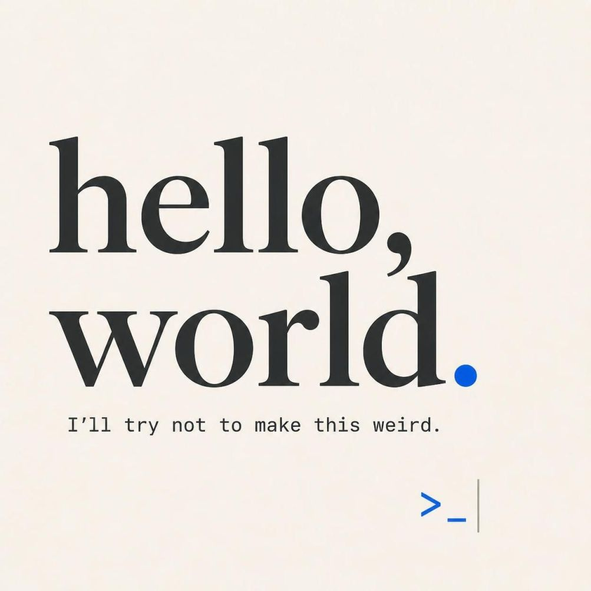

Hello World

This is my first post on my new Hugo website! Testing this out before fully migrating from WordPress. :)The switch isn’t exactly straightforward. I spent some time wrestling with migration tools, but nothing clicked quite right. So here I am — building content slowly, learning as I go, and as i failed to import stuff automagically, I’m planning to do it manually if and when the time feels right.
Why ditching WordPress after more than a decade?
A few quick notes on why this change:
- Hugo offers speed and simplicity I couldn’t find elsewhere ⚡
- Markdown + plain text = workflow fits how I think and write
- Full control without platform lock-in: can easily transfer my content from platform to platform
- It just works, which matters more than flashy features
This space will evolve as I do. Expect posts about GitHub projects, occasional radio experiments, photography and whatever else catches my jazz. The goal is to keep things organized, honest, and actually sustainable long-term. Also this theme might not be definitive. So keep an eye here from time to time.
Feedback and tips are always welcome 👋
Thanks for stopping by.